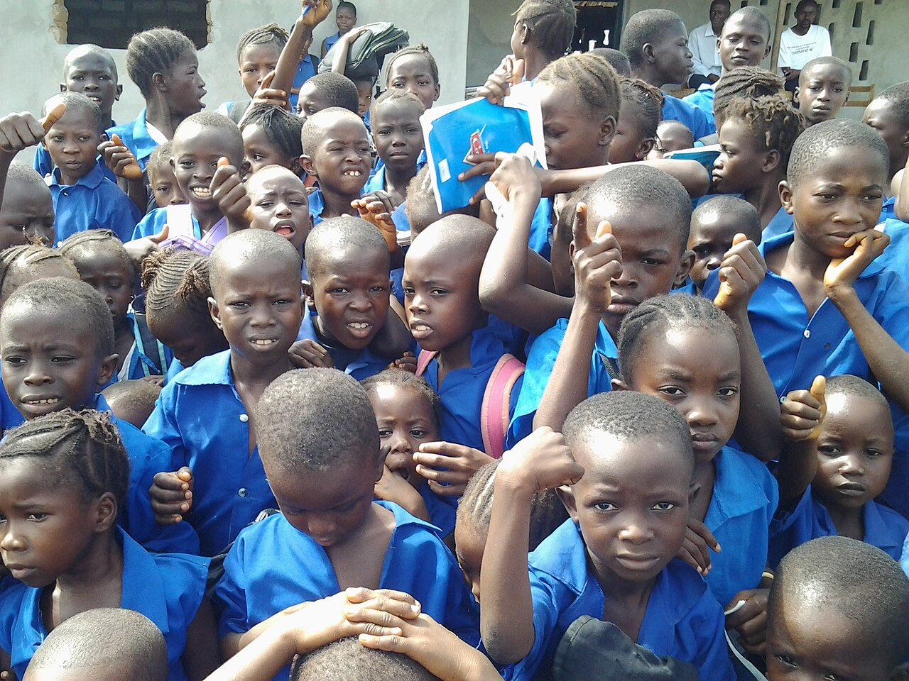
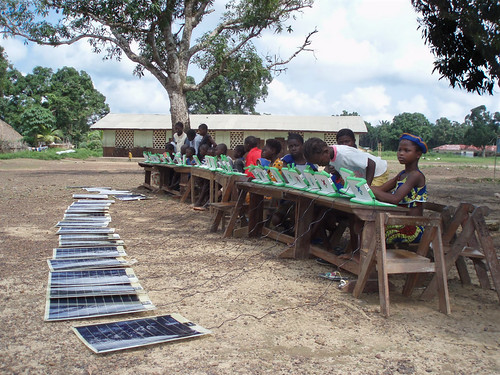

A PLACE TO LEARN, BUILD SKILLS AND FIND SUPPORT
Learning opportunities,
closer to home.
Community learning, mentoring and practical digital skills
to help young people
grow with confidence.

WHAT WE OFFER
Practical ways to keep learning

MENTORING
Girls’ mentoring circles
Encouragement, confidence and supportive peer connections.
Explore mentoring
SKILLS
Practical digital skills
Build confidence with digital tools for study and everyday life.
Explore digital skills